We build a tool-using LLM framework for procedural content generation, where an agent iteratively edits, evaluates, and optimizes game levels with environment feedback. The framework works in both static design tasks and games with dynamic gameplay mechanics, supports not only simple edits like tile placement but also classic PCG algorithms as tools, and can follow open-ended natural language instructions alongside explicit functional constraints.
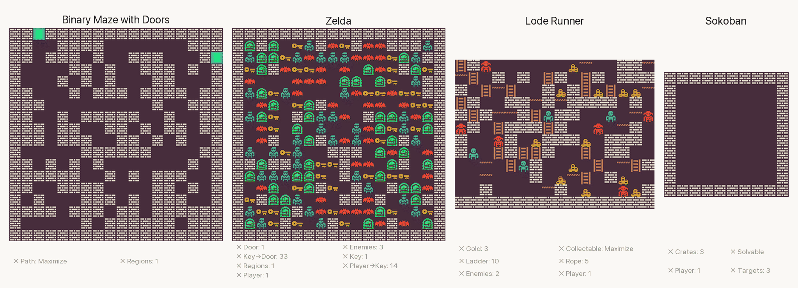
The agent iteratively optimizes levels across Binary Maze, Lode Runner, Zelda, and Sokoban.
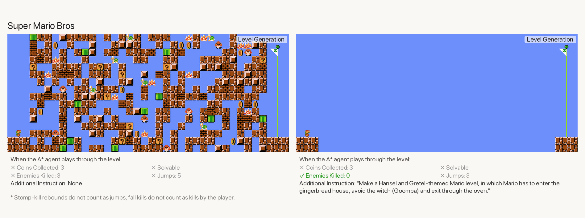
Super Mario Bros level editing with gameplay simulation feedback.
Framework
Instead of asking the LLM to directly generate an entire game level in one shot, we wrap the game as an interactive environment, similar to an RL environment. This allows the environment to handle gameplay dynamics, evaluate the current level, and provide structured feedback based on level metrics. Within this loop, the LLM agent can perceive the current level state, reason about what should be improved, make editing plans, and iteratively modify the level.
Our framework supports both static and dynamic game environments. In some tasks, the level can be evaluated directly from its structure using metrics such as tile counts, connectivity, or solvability. In more dynamic environments, evaluation can also depend on simulated gameplay, such as the actions taken by a deterministic A* agent interacting with the level. This makes it possible to provide rich environment feedback ranging from simple structural statistics to behavior-based signals.
Tools
The tool set can include both simple and complex operations. At the simplest level, the agent may place individual tiles, draw lines, or edit patches of the map. But the framework is not restricted to these primitive edits. In the Binary Maze domain, for example, the agent can also invoke classic PCG algorithms that are naturally suited to maze generation, such as binary space partitioning and tree-search-based diggers.
Language Control
Beyond functional constraints, the framework can also incorporate free-form natural language instructions. This enables open-ended language control on top of explicit metric-based requirements, so the agent can satisfy concrete functional targets while also adapting to higher-level design goals such as theme, story, or intended player experience.
Controllability
The agent can be directed to optimize toward specific target values for different controllable metrics in each game domain. Each grid below shows multiple trials where the agent targets a different metric value per trial, demonstrating fine-grained controllability over level properties.
Binary Maze Show Final Maps 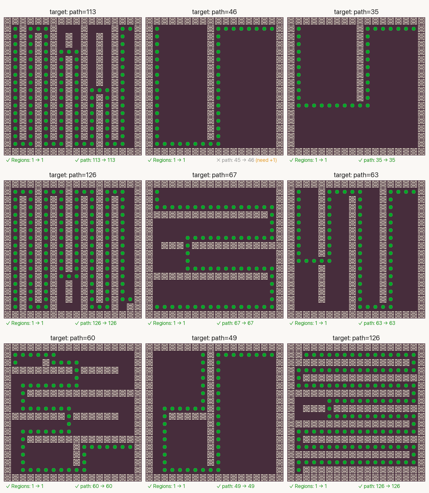
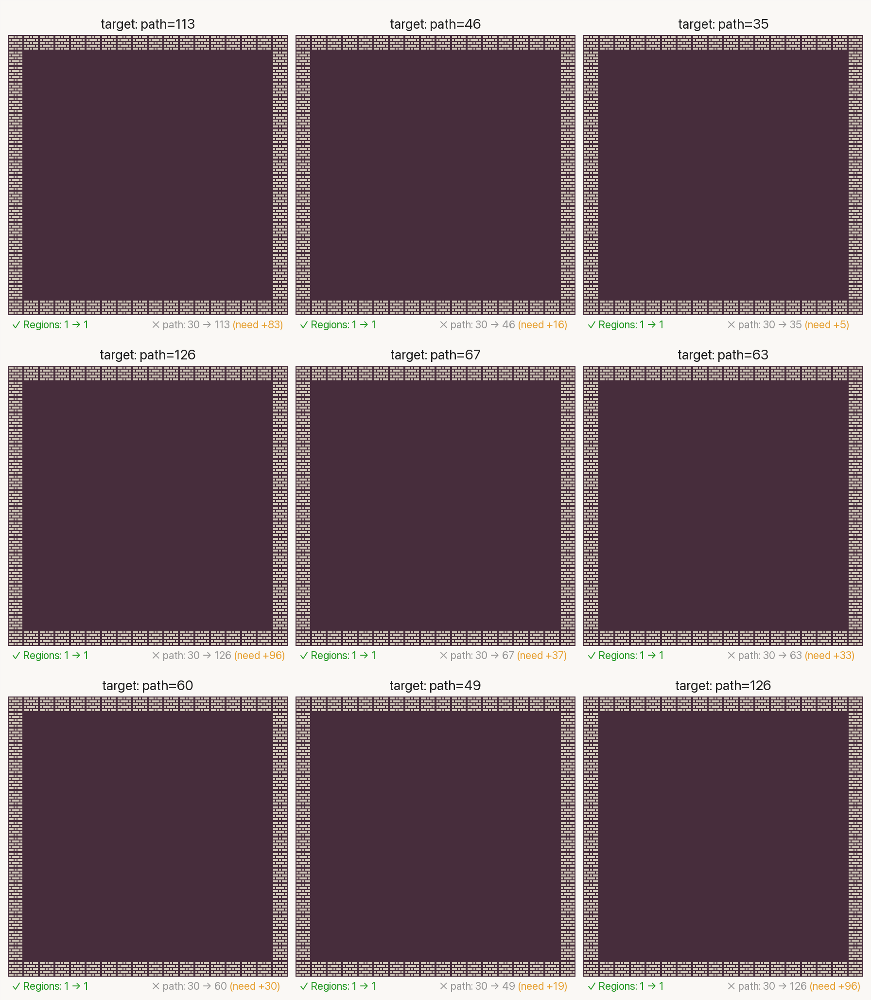
Binary Door Show Final Maps 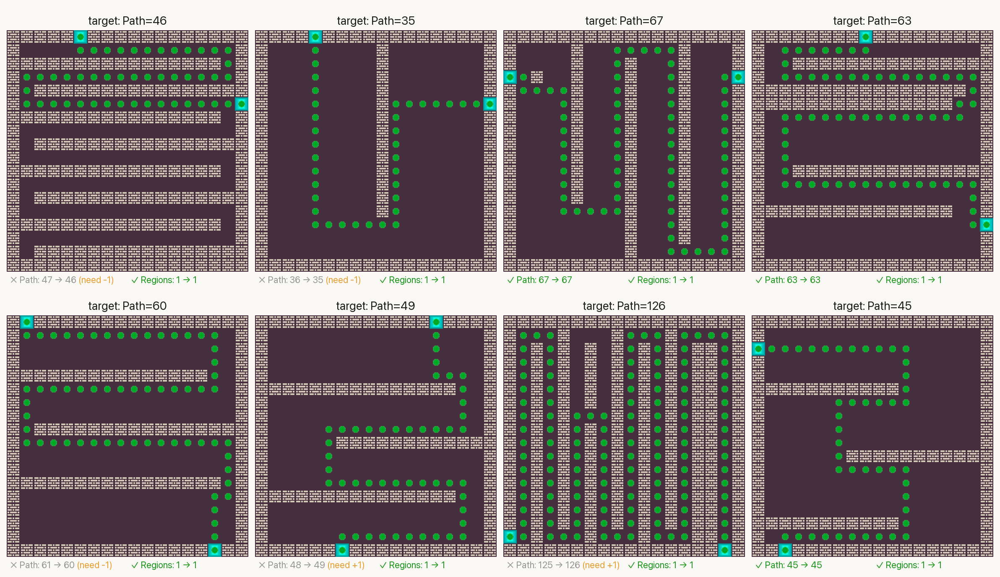
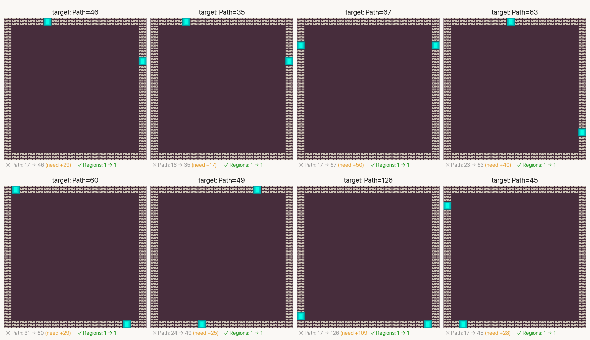
Lode Runner Show Final Maps 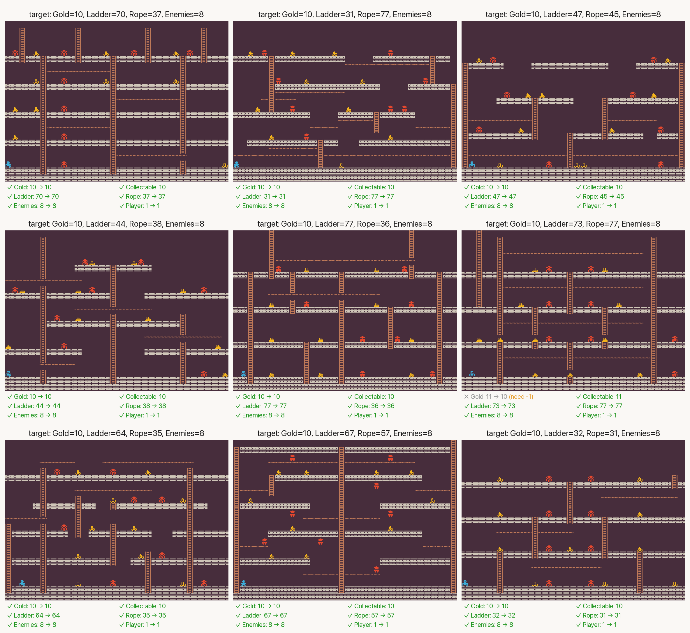
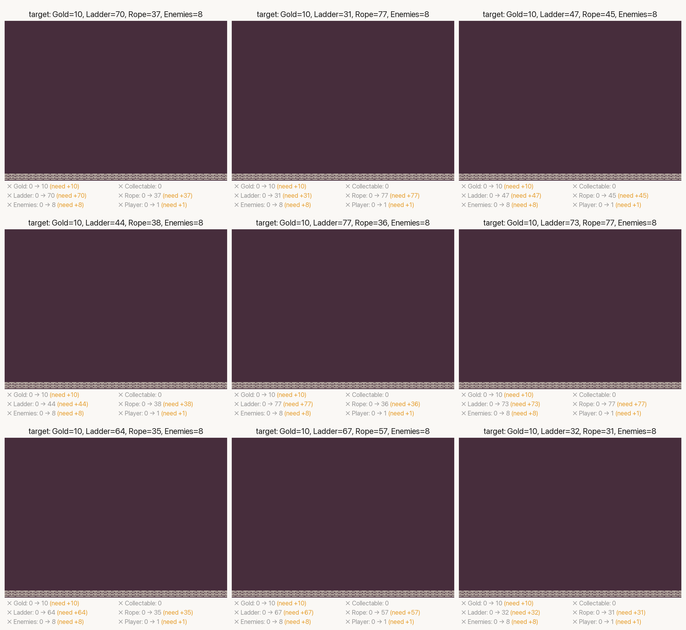
Zelda Show Final Maps 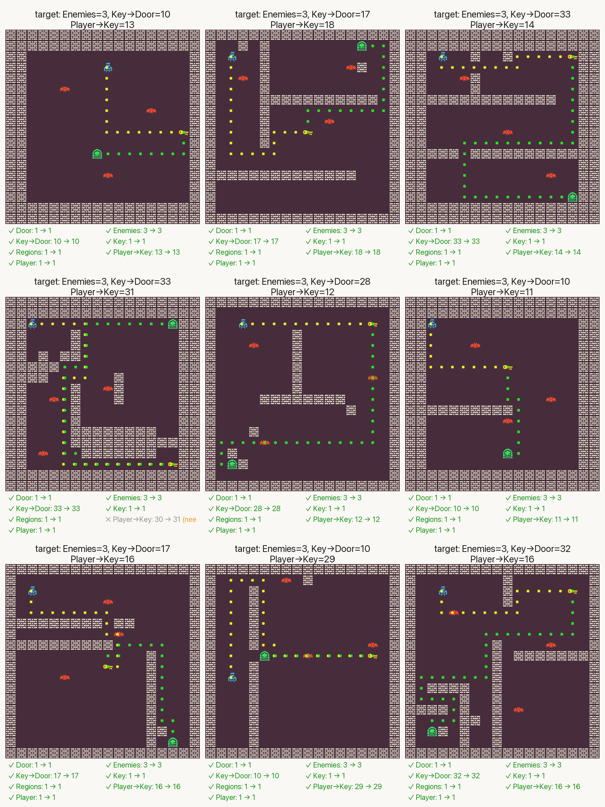
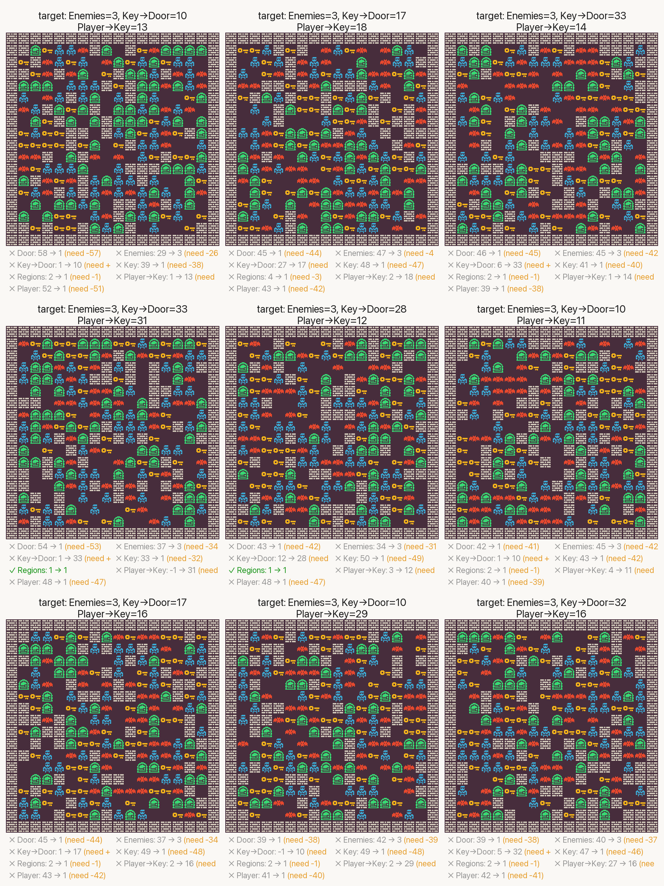
Sokoban Show Final Maps 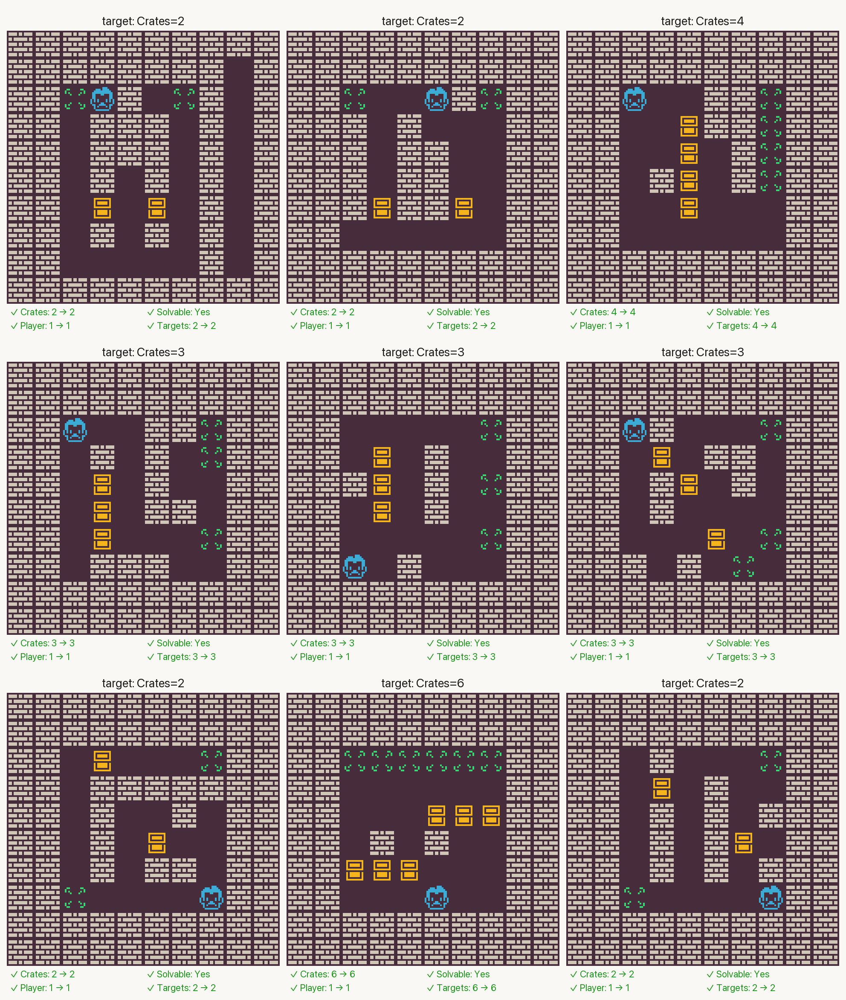
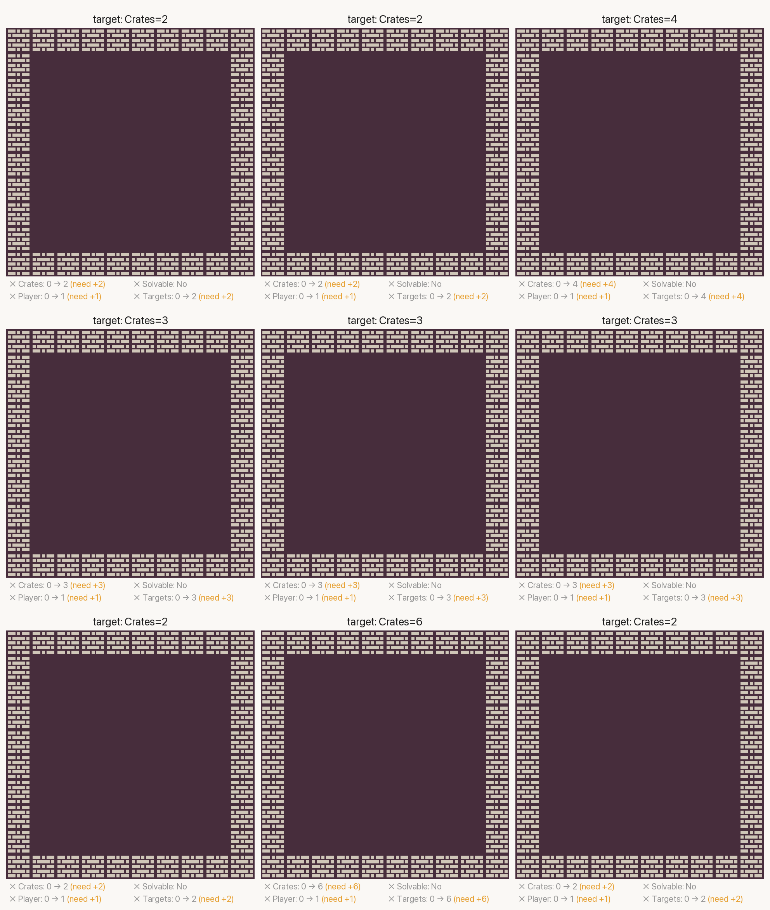
Super Mario Bros Show Final Maps 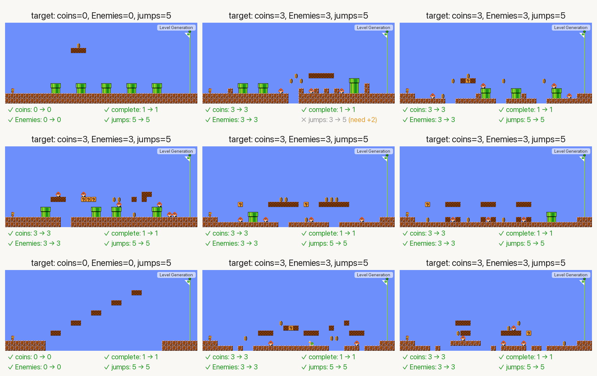
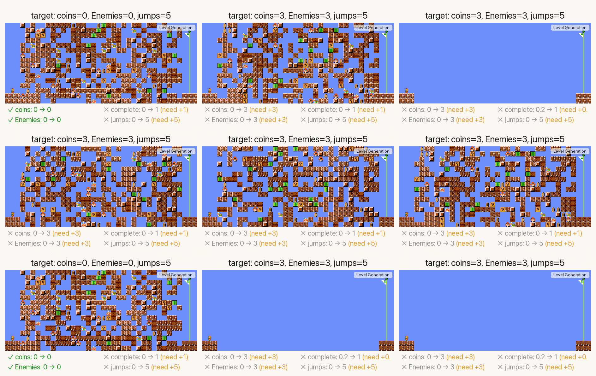
Gallery
Accepted edits across each game domain, showing the agent's rationale and level changes at each step.
Binary Door
Lode Runner
Zelda
Sokoban
Super Mario Bros
Citation
If you find this work useful in your project/research, please consider citing our preprint:
@article{jiang2026agentic,
title = {Agentic PCG: Procedural Content Generation via Tool-using LLMs},
author = {Jiang, Zehua and Earle, Sam and Khalifa, Ahmed and Togelius, Julian},
journal = {Available at SSRN 6499021},
year = {2026},
note = {Available at SSRN: \url{https://ssrn.com/abstract=6499021}}
}